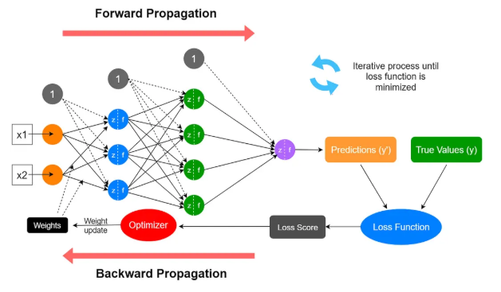
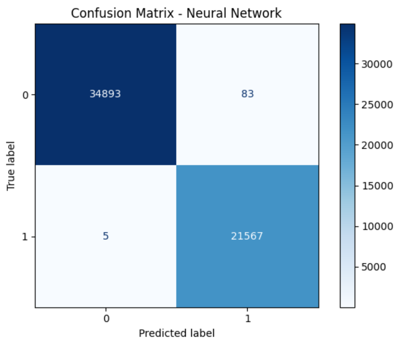
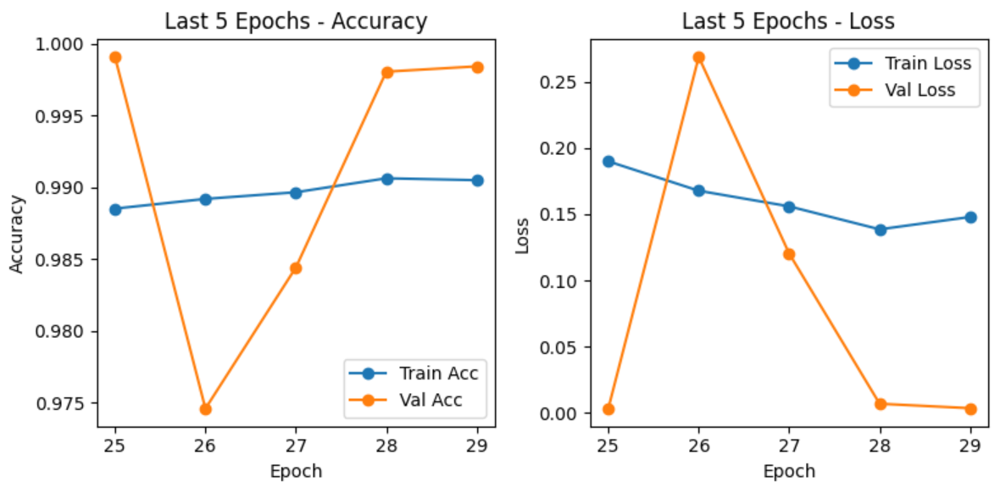
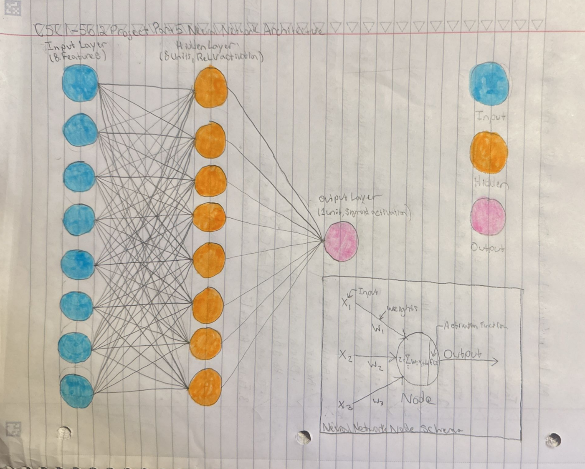

Figure 2. Neural Network Node. Source
Neural Networks are supervised learning models built from simple connected units that process numerical inputs. Each unit applies a weighted sum to its inputs, adds a bias term, and passes the result through an activation function. This structure (as visualized in Fig. 1) allows the network to learn patterns that are not captured by basic linear methods.

Figure 1. Simplified diagram for Neural Networks. Source
A single unit computes a value of the form f(w · x + b), where w is a set of weights, x is the input vector, b is a bias, and f is an activation function such as ReLU or sigmoid (Fig. 2). By arranging many of these units into layers, the network transforms the data step by step until it reaches a final prediction.
Figure 2. Neural Network Node. Source
Training relies on backpropagation, which is a procedure that measures how each weight contributes to the model’s error. The weights are then updated in the direction that reduces this error. Repeating this process over many epochs allows the network to improve its accuracy on labeled data.
Neural Networks require data that is both structured and labeled. Because they are supervised learning models, they learn by comparing their predictions to known outcomes. For this project, the dataset includes a set of input features along with a binary label that indicates one of two possible classes. Before any modeling can begin, the data must be cleaned, labeled, and organized into the correct format for training.
The first step is labeling. The original dataset contains only raw observations, so each row must be assigned a label that reflects the category it belongs to. Once labeling is complete, the data can be used for supervised methods such as Neural Networks, Naive Bayes, Decision Trees, SVMs, and other classification models. The labeled dataset shown below illustrates how each observation now includes both feature values and a target label.


Once the dataset is labeled, it must be divided into two disjoint subsets: a Training Set and a Testing Set. The Training Set is used to teach the neural network by adjusting its internal weights over many iterations. The Testing Set is used only after training is complete, allowing the model’s accuracy to be measured on data it has never seen before. Keeping these sets separate is essential because it prevents the model from memorizing the data and ensures that the evaluation reflects true generalization.
The Training Set contains 70% of the labeled data and is used during the learning process. The Testing Set contains the remaining 30% and is used to evaluate performance. Both sets were created using a randomized split to ensure that the distribution of labels remains consistent across each subset. This helps the neural network learn balanced patterns and prevents bias toward one class.


The labels used for the neural network are binary, meaning the model predicts one of two possible outcomes. This aligns with the project requirement of using a single output unit. With the data properly labeled, split, and formatted, it is ready to be passed into the neural network for training and evaluation.
The neural network was implemented in Python. Before training, all categorical columns, e.g., journal names, venues, fields of study, and open-access status—were converted into numeric values using a LabelEncoder. The encoder was then fit on the combined training and testing data to ensure consistent mappings across both sets. After encoding, the dataset was split into input features and a binary label indicating whether each publication was classified as high-cited or low-cited.
The model NN architecture consists of one hidden layer with eight ReLU units and a single sigmoid output unit for binary classification. Training was performed for 30 epochs using the Adam optimizer and binary cross-entropy loss. After training, the model generated predictions for the testing set.
The neural network achieved a final testing accuracy of 99.84%, showing that it was able to distinguish high-cited publications from low-cited ones with very high reliability. The model architecture used in this analysis (shown in Figure 9) consists of eight input features, a single hidden layer with eight ReLU units, and a sigmoid output unit for binary classification.

The confusion matrix in Figure 7 highlights the model’s strong performance. It correctly predicted 34,893 low-cited papers and 21,567 high-cited papers. Only 83 low-cited papers were incorrectly labeled as high-cited, and only 5 high-cited papers were misclassified as low-cited. This reflects excellent precision and recall for both classes.

Figure 8 shows the accuracy and loss trends over the last five epochs. Training accuracy remained high and stable, while validation accuracy rose sharply toward the end. Validation loss briefly increased before dropping to nearly zero, indicating that the model continued refining its decision boundaries and ultimately converged to a stable solution.

The neural network produced highly accurate classifications, achieving a final testing accuracy of 99.84%. The confusion matrix confirms this performance: the model correctly identified 34,893 low-cited papers and 21,567 high-cited papers, with only 83 false positives and 5 false negatives. These results indicate that the model learned a clear separation between the two citation classes and made very few misclassification errors.
The results also suggest that certain publication characteristics consistently correlate with higher citation counts. Journals, research fields, and accessibility appear to play a role in how widely a paper is referenced. The model’s strong performance indicates that these patterns are stable enough to be learned and used for classification.
All to say, this neural network demonstrates how machine learning can help uncover structure in large research datasets. By learning from historical citation behavior, the model provides a useful perspective on what makes certain publications more influential than others. This type of analysis can support researchers, institutions, and publishers in better understanding how scientific impact develops over time.